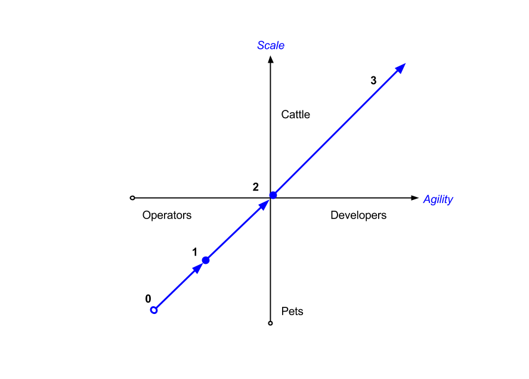

The DevOps Maturity Diagram
12/Apr 2017
The opening of my first Calm.io DevOps article started with:
Let me share what I’ve learned on my journey to DevOps: it is a culturally rendered term and it has a different meaning for everyone.
In that article, I go on to define DevOps and explain the term. Let me share my experience to easily chart the journey of progressive stages to DevOps maturity.
Inspiration
How do you explain DevOps to the uninitiated or to a non-technical audience?
In August, 2016 Nutanix acquired my employer, Calm.io. I became the first DevOps Solutions Architect in Sales Engineering, a subject matter expert overlay role that supported North America. At Calm, our audience was the DevOps practitioner and my colleagues, especially @Aaditya and @JasnoorGill, had created a higher-level pitch for investors to understand the need for DevOps.
Nutanix had a broader and more traditional IT, Data Center, and Operations audience. Every day, I struggled to explain the benefits of DevOps in under a minute and my “elevator pitch” failed more often than succeeded. Every failure and success inspired me to do better and I constantly asked for feedback to improve. I still do!
Mentoring
Two discussions with Nutanix executives were another set of inspirations how to explain DevOps:
- In December, 2016, I spoke with Nutanix Chief Development Officer, Sunil Potti @sunilpotti, and he explained how Calm’s integration into the Nutanix control plane made the platform stronger in contrast to the separate, diluted, fragmented “bolt on” experience that competitors continually bring to market.
- In January, 2017, I spoke with Nutanix Chief Architect (now co-CTO), Binny Gill @binnygill, and he explained how Nutanix aspires to increase feature automation (e.g.: storage compression) while removing feature controls from the user interface. The feature can be hand-tuned via command-line if needed, but the administrator has oversight via feature performance summary graphs. The result is a platform value increase while customer complexity decreases, something Nutanix aspires to achieve much as Apple’s iOS has done.
In hindsight, I could see both discussions partially explained as a learning of the “Consumption Gap.” Other Nutanix colleagues used variations of the “Consumption Gap” diagram from Complexity Avalanche by J.B. Wood in 2009 (the same year the term DevOps was created) to explain how Nutanix hyper-converged infrastructure software data and control planes reverse complexity in an organization: all of these combined into another inspiration.
Business Outcomes
In February, 2017, the Nutanix mid-year sales kick off included an intense sales methodology training based on selling positive business outcomes to customers. It galvanized me to figure out new ways to communicate about DevOps, Nutanix, and Calm. Abstractly, the sales methodology is similar to the Technology Services Industry Association Digital Transformation Journey Infographic: “Navigating the World of Recurring Revenue Offers”.
Preparation
January 25, 2017: I gave a Calm deep dive session to my peers at Nutanix, and there were two topic requests that shed light into the DevOps world for them and provided insight (the what, who, why that Nutanix management always cites) for the Calm automation product’s value and audience for DevOps. The first topic was, “What does a software developer do?” and I showed the DevOps Automation Diagram to explain the value chain between the developer and the customer, then showed the Build, Test, Deploy pattern. The second topic was, “Why do I need DevOps?” and I landed on the roughly ten steps it takes to refactor from monolith to hybrid cloud applications to show how automation accelerates all efforts.
April 9-13, 2017: I was at Nutanix headquarters preparing to speak at the third annual Nutanix .Next user conference with 4000 attendees. To explain Calm’s value proposition to my colleagues, I likened DevOps to the business outcome of agility and Pets versus Cattle (or removing all single points of failure) to the business outcome of scalability.
Agility = DevOps
is the process of removing all friction between the developer1 and customer value.
My DevOps definition aligns everyone to deliver frictionless business value, however the impact can be summarized as business agility. When anyone can build, test, and deploy value, business processes are transparent and work is democratized.
1 To understand the emergent value of software developers, see https://thenewkingmakers.com/.
Furthermore, the value chain or steam between the developer and customer is bi-directional! During the value chain mapping exercise, discovery of friction in the forms of technical debt and cultural debt will abound. Therefore, you are “doing DevOps” when you remove friction, even if you are doing it for yourself on your own laptop: it will pay dividends down the value stream.
DevOps success is a mixture of culture and technology enablement, allowing the organization to transform and achieve agility. This can be observed in the manufacturing industry by the Toyota Production System and I elaborate on this in Why is DevOps so Hard?.
If technology and cultural factors enable friction-free DevOps success, it is easy to observe their corresponding challenges in organizations: fragmentation foils any technology integration and people naturally tend to be pets, causing single points of failure, concentrated power, and manual handoffs which foil automation.
The next stage of refactoring friction out of the value stream is to progressively automate operations with key performance indicators and metrics for heuristically driven business operations. DevOps extends to run the business when the organization constantly tunes and expands the automation systems, while the employees engage to respond to new business initiatives and improve business efficiency, all resulting in business agility!
These benefits are confirmed by the annual State of DevOps surveys, which compares low to high performers on the DevOps journey. The 2017 summary is that high performers:
- Deliver more
- Repair sooner
- Automate more
… meaning that the high performers achieve agility delivering value with DevOps, run higher quality operations with less downtime, and invest their productivity gains back into further automation in order to continue a positive feedback loop of DevOps success. DevOps success accomplishes the very definition of an agile business, which accelerates away from their competition.
My interpretation is that the high performers have achieved DevOps maturity, which I will illustrate with the second diagram. High performer DevOps maturity perfectly aligns with my DevOps definition because they have achieved agility.
This further validated by http://www.eweek.com/it-management/capgemini-survey-finds-enterprises-reaping-profits-from-it-automation?dni=445883873&rni=24948142&utm_campaign=EWK_NL_EP_20180510_STR1L2&utm_medium=email
DevOps Evangelism Slides forthcoming: speaker notes are above, but they are an update, expansion, and summary of my earlier work DevOps Demystified
Scalability = Removing Pets
Understanding that the lens of pets versus cattle allows one to evaluate and remove every single point of failure by working to replace each pet with distributed resources under fleet management and service level agreements. Any organization can progressively refactor and remove their pets to unlock unprecedented levels of scalability.
Upon adopting this lens, the entire world looks different and it is easy to identify the traditional values which no longer apply. Continual discovery reveals invisible prison bars which constrain progress.
Some abstract examples:
| Category | Pets | Cattle |
|---|---|---|
| Organization: | Single Point of Failure (SPoF) | Fleet (no SPoF) |
| Naming: | Members of a theme | Naming Conventions and Numbers |
| Remediation: | MTTF | Replace to maintain SLA |
| Infrastructure: | Scale up | Scale out |
| Architecture: | Monolith | Distributed, Microservice |
Some technology examples:
| Category | Pets | Cattle |
|---|---|---|
| Naming: | earth.corp | webtier-01.ahv01.prod.corp |
| Uptime Goal: | Years | Seconds |
| Failure: | MTTR of minutes + hours | No SPoF! |
| Network: | Hardware | Software Defined |
| Storage: | SAN | Distributed File System |
| Datacenter: | Single AWS Region, Cluster, or DC | Multiple Enterprise/Hybrid Clouds |
Some cultural examples:
| Category | Pets | Cattle |
|---|---|---|
| People: | Heroic admin at HQ2 | Global Operations team |
| Operations: | Hands on: manual ops, change controls | Hands off: monitors, KPIs, ChatOps |
| Values: | DevOps team | DevOps mindset distributed across entire organization |
2 e.g.: the sysadmin in The Phoenix Project, by Gene Kim, Kevin Behr, George Spafford: IT Revolution Press, 2013
Yes, I consider the DevOps team a pet! This can be a controversial statement until you use the lens and definition, but this will be a future blog entry.
DevOps Evangelism Slides forthcoming: speaker notes are above, but they are an update, expansion, and summary of my earlier work DevOps Demystified
At this point, it should be easy to ask “How many pets do you have?” and categorize the answers into culture and technology. This will be developed further for maturity shortly.
To paraphrase the journey to DevOps: we all must become DevOps, working to continuous improve3:
- Cultural change to reduce dev+test+ops silos
- Automation increasing value delivery, by accomplishing:
- Agility by democratizing expertise and distributing work
- Results: continuous integration, delivery, and deployment
- Scalability by eliminating single points of failure
- Results: cattle infrastructure and operations
- Agility by democratizing expertise and distributing work
- Feedback measuring closed loop value4
- Results: monitors + logs + metrics for Key Performance Indicators
3 Based on C(L)AMS by John Willis & Damon Edwards 4 Proverb: “What is measured improves.”
This cycle is repeated to insure value increases by observing the feedback measured from cultural and automation changes.
First Diagram: DevOps Journey
Back to early April, 2017 when I was preparing for my talk, I arrived at graphing the abstract progressions of both agility and scalability to create the DevOps Journey Diagram. I reversed the initial axes layout and I arrived at Gartner-like diagram which yielded instant “up and to the right” parsing at a glance. The diagram yielded insight into the successive stages for a journey to DevOps to travel from the lower left quadrant to the upper right quadrant.

With my career experience, confirmed by speaking to peers at DevOpsDays as well as many Calm.io and Nutanix customers, I identified the DevOps Journey Stages. Success! I added a side explanation for the stages of the journey to help orient where one might be and where one could go next:
| Stage | Outcomes |
|---|---|
| 0 | Hand maintained monoliths, in a pet data center, with backups for revision control |
| 1 | Programatic change controls and operations |
| 2 | Deploy new workloads with configuration management |
| 3 | Cattle everywhere: build test driven infra artifacts, hybrid cloud deployments, KPI driven operations |
The next week, on April 26, 2017: I presented the DevOps Journey diagram to a large defense contractor and before I completed my explanation, one of the audience said, “we’re a pet shop and depending on the team, we’re between stage 0 and 0.5.”
The first diagram was incredibly effective, but I knew I was conflating many concerns. For example, re-platforming a data center onto Nutanix improved infrastructure by migrating to a distributed system (pets to cattle) moving up along the vertical access, but it also progressed automated operations to the right along the horizontal axis. It didn’t make sense that each moved independently along a separate axis, but the combination did make sense along an “up and to the right” diagonal.
Conflation and Oversimplification?
The combination of infrastructure and operational automation implied multiple aspects of the journey. Progress could be made in any dimension by a siloed infrastructure or operations team by adopting the Nutanix platform, but this success would only be for the “Ops” side of the organization. It would ignore the other side of the DevOps equation, the “Dev” or developer impact that could be achieved by extending to application infrastructure and the software development life cycle. The combination of both sides of the house is the realm of DevOps and it addresses the total delivery of business value, further reinforcing my DevOps definition.
So how could one address the multiple aspects and progressive stages of the DevOps journey across the entire organization? What could convey additional complexity, recognize the inherent traditional organization silos, and enhance the first diagram without spoiling its simplicity?
Decomposure Aligns Parallel Journeys
I worked to decompose the journey into four parallels, each representing infrastructure, architecture, operations, and culture. While any parallel could be its own isolated journey for a siloed team, when aligned and combined together, the overall organization could achieve advanced stage outcomes, yielding the second diagram.
A legend not only helped explain the stages of each parallel, but also illustrated the advanced business outcomes of a mature DevOps organization through examples. The examples show how DevOps can align different teams, responsibilities, and agendas to transform an organization to achieve agility and scale.
| Stage | Infrastructure | Architecture | Operations | Culture |
|---|---|---|---|---|
| 0 | Single server, single datacenter | Monolithic | Hands-on | Silos |
| 1 | Repeatable | Governable | ||
| 2 | Syntheized, ephermeral | Distributed, scale out | Delegable deploy+ops | Testable with metrics |
| 3 | Hybrid clouds | Global + active | KPI driven lifecycle | Data-driven experiments |
Second Diagram: DevOps Maturity

On June 29, I presented both diagrams on stage at .Next D.C. for my portion of the talk “AW209: Agile Infrastructure for Mode 2 Apps,” with my colleagues Ray Hassan (Nutanix) and Allan Naim (Google Cloud).
Update: 2018-05-03
My proposal was accepted by the organizers, voted upon by the attendees, and delivered as a talk at DevOpsDays Austin, How to Sell DevOps in Under an Hour with this abstract:
You’ve entered a new customer’s conference room, the introductions are complete, and you have the remainder of an hour to change their traditions: how would you explain and sell DevOps to non-technical management, engineering, and IT? For the past three years, I’ve traveled to small and large businesses around the world to explain how DevOps can continually impact any organization and I’ve evolved to speak the language of business and demonstrate positive business outcomes.
With two simple definitions of agility and scalability (better known to our community as “DevOps” and “Pets versus Cattle,” respectively), you can explain and diagram the stages of a DevOps journey to any organization. Once the journey has been mapped out, it can be deconstructed over parallel dimensions of cultural, architectural, operational, and infrastructure progression to illustrate how any organization can achieve DevOps Maturity. I’ll show early work on how we’re building with our customers cost metric models to determine DevOps total cost of ownership.
I didn’t get to the DevOps TCO model, but I was happy John Willis @botchagalupe was at the talk and he helped define DevOps, agreeing that it is cultural: “at the end of the day, it is what you make of it.”
Update: 2019-02-22
- Session Title maximum 25 words/75 characters
- Description maximum 150 words
Variations for abstracts:
Demystifying DevOps: Agile Infrastructure and Applications for IT
Business expectations for IT have changed, have you been asked to provide IaaS: Infrastructure as a Service?
IaaS efforts vary in maturity: on-demand infrastructure is the minimum deliverable, but can you drive continuous operations for security patching, performance scaling, backups, disaster recover, show back costs, and audits? Providing a mature IaaS experience equates to public cloud parity, but that was established over a decade ago.
Expectations today have grown to PaaS: Platform as a Service and SaaS: Software as a Service, where application deployments are the criterion for business success. These efforts also vary in maturity: all of the IaaS experience must be extended "up the stack" to the application life cycle, while also providing self service governance for one-click application installations and upgrades.
Learn how to map your journey to DevOps, where advanced IT services and service levels requires understanding new responsibilities and skill sets.
Learning Objectives and Key Takeaways: (maximum 30 words)
- Understanding "DevOps" with a clear definition, cultural implications, and how it achieves business agility.
- Understanding "Pets versus Cattle," then using it to evaluate and eliminate single points of failure to achieve scalability.
- Mapping agility and scalability goals onto the DevOps Maturity Diagram to illustrate your journey towards advanced IT services and service levels.